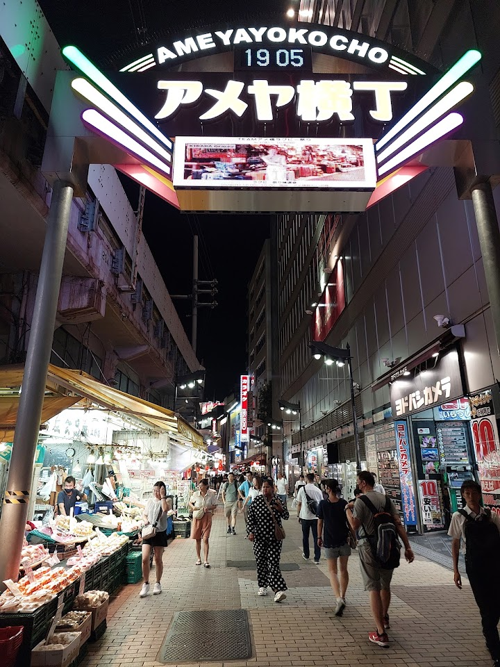
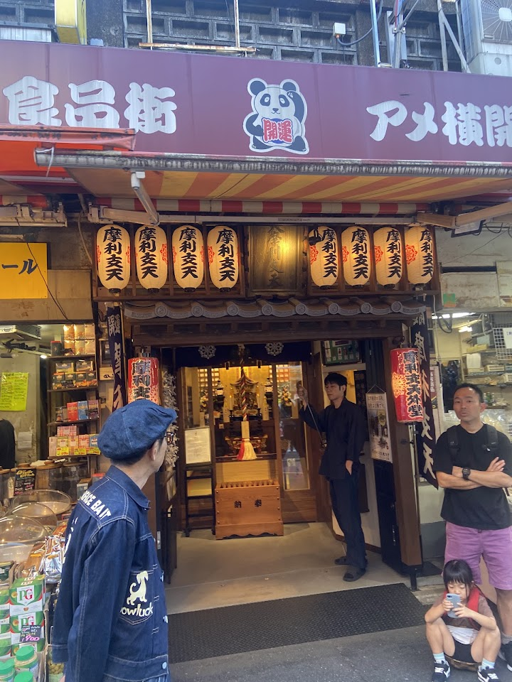
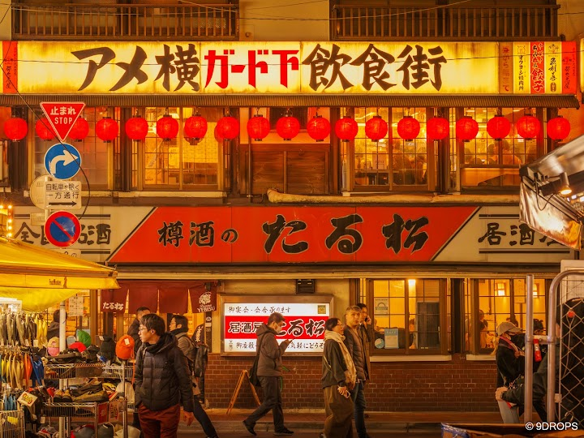
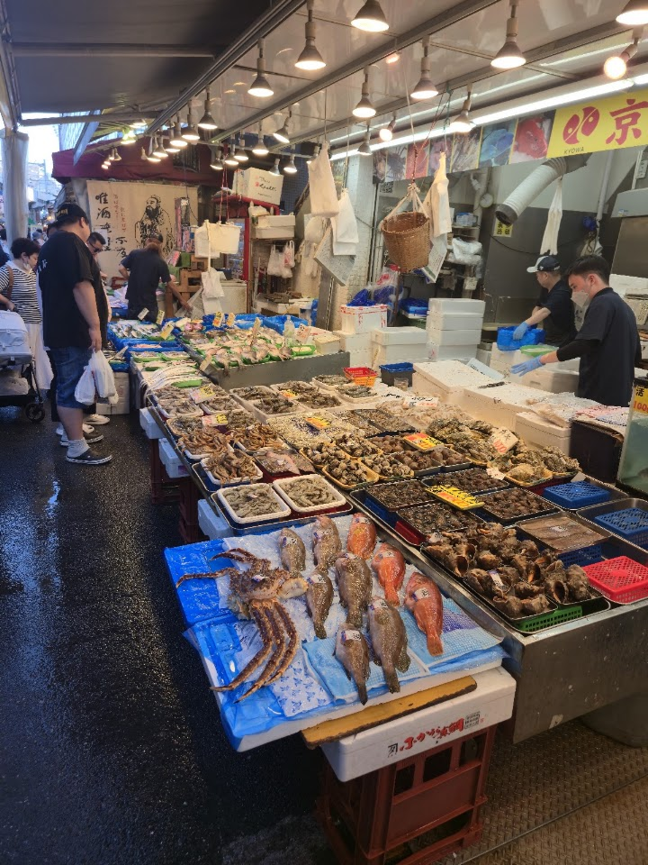
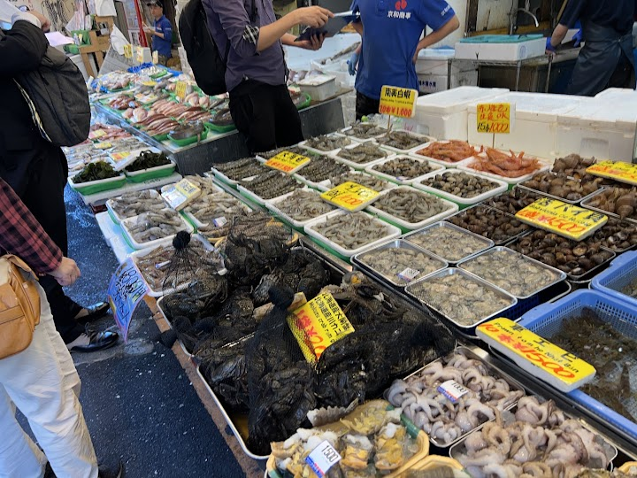

Ameyoko market (suggested)
Open in Google Maps (street view, more photos and reviews there)






Visitor tips on finding it and getting there
Ameyokocho Street is a lively and vibrant shopping street with a unique local atmosphere. It offers a mix of souvenirs, street food, snacks, fashion, and everyday goods at reasonable prices. It’s a great place to explore, experience Tokyo’s local energy, and hunt for interesting finds while enjoying the bustling market vibe. For Muslim, there are a lot of Halal stores here. If you stay in Ueno area and plan to buy chocolates, just buy at local drugstores here. The prices are reasonable and sometime cheaper. You should visit Megazines store, it offer you various souvenirs that cannot be find e
We began our day at Ueno Park (上野公園) a historic oasis in Tokyo. We spent about two hours admiring the treasures, history, art and culture at the Tokyo National Museum. We walked past some of the best ginkgo yellow and autumn foliage scenes at the Park. Afterwards, we wandered through Ameyoko Market (アメヤ横丁), a bustling street market famous for fresh seafood, snacks like takoyaki, spices, and goods, offering a tantalizing slice of local life. We had lunch at Mori no Chaya お食事処 森の茶屋. We had yummy fried pork cutlet, fried fish, rice and miso soup. Great value for money. Afterwards, we had anmits